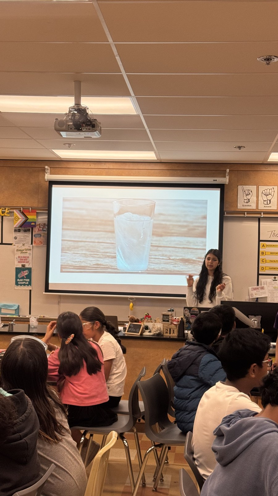
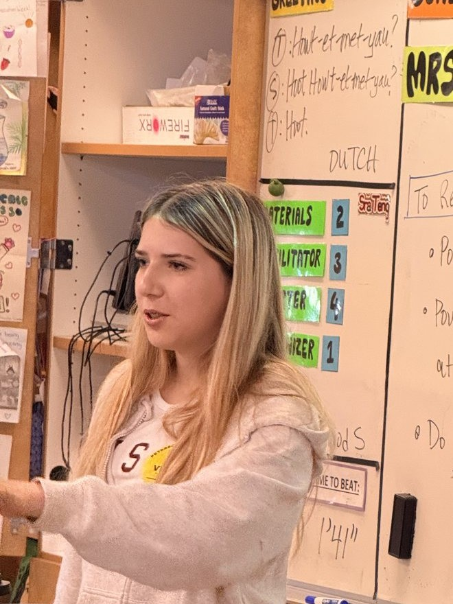
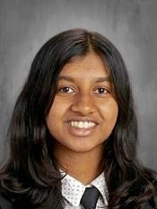

Discovery Day was founded in 2025 by Kimi Yashar, now a physics major at Carnegie Mellon University, with the mission that budget cuts shouldn’t be a barrier to a student’s access to hands-on science activities that spark curiosity and understanding in topics like earth sciences, biology, chemistry, and more. After a successful first event at Peterson Middle School with over a hundred participants, we expanded to a larger leadership team and have reached over four hundred students in the last year — but this is just the beginning.
Kimi then brought on Shivaani and Deniz to keep bringing Discovery Days to more students: and since then, our organization has only grown.

The first Discovery Day →A highlight of the program was our lab at Peterson Middle School this spring: designing new labs, working with teachers, and running a two-day greenhouse workshop that reached 330 students.

Deniz is a sophomore who enjoys biology and inspiring curiosity in younger students.

Shivaani is a sophomore who is passionate about biology, astronomy, and climate science, and believes that funding should not be a barrier to discovery. In her free time, she enjoys reading, debate, and photography.
We would love to run a workshop with your class. Check out the "host a lab" page, and email discoverydaycourse@gmail.com with any questions! If you're a high schooler interested in joining us, we'd love to hear from you!.